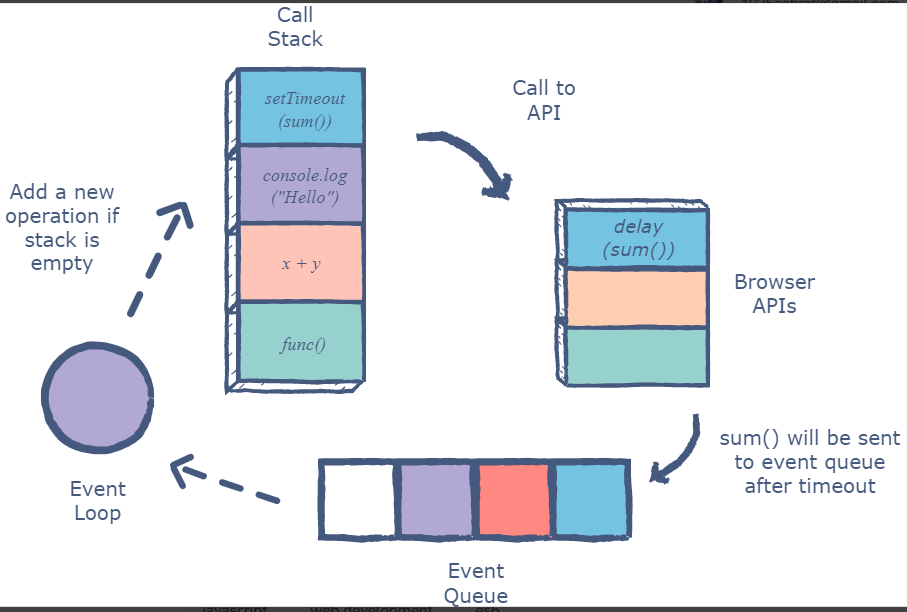

Question-1: What is the difference between Local storage and Session storage ?
Answer :
Local Storage
This read-only interface property provides access to the Document’s local storage object, the stored
data is stored across browser sessions. Similar to sessionStorage, except that localStorage data gets
cleared when the page session ends – that is when the page is closed. It is cleared when the last
“private” tab of a browser is closed (localStorage data for a document loaded in a private browsing or
incognito session)
Session Storage
Session Storage objects can be accessed using the sessionStorage read-only property. The difference
between sessionStorage and localStorage is that localStorage data does not expire, whereas
sessionStorage data is cleared when the page session ends.
A unique page session gets created once a document is loaded in a browser tab. Page sessions are valid
for only one tab at a time. Pages are only saved for the amount of time that the tab or the browser is
open; they do not persist after the page reloads and restores. A new session is created each time a tab
or window is opened; this is different from session cookies. Each tab/window that is opened with the
same URL creates its own sessionStorage.When you duplicate a tab, the sessionStorage from the original
tab is copied to the duplicated tab. Closing a window/tab ends the session and clears sessionStorage
objects.
The difference between Local storage and Session storage is given in the table below:
| Local Storage |
Session Storage |
| The storage capacity of local storage is 5 MB/10 MB |
The storage capacity of session storage is 5 MB |
| As it is not session-based, it must be deleted via JavaScript or manually |
It’s session-based and works per window or tab. This means that data is stored only
for the duration of a session, i.e., until the browser (or tab) is closed |
| The client can only read local storage |
The client can only read local storage |
| There is no transfer of data to the server |
There is no transfer of data to the server |
| There are fewer old browsers that support it |
There are fewer old browsers that support it |
Question-2: What is the difference between Global scope and Block scope ?
Answer :
Local Scope
Local scope is also known as block scope. A block is the code found inside a set of curly braces {}.
Inside those curly braces we typically write out the business logic for our functions, statements and so
on.Variable declared using let and const can not be used outside the scope.
Global Scope
In Global Scope, variables are declared outside of blocks or outside the local scope. These variables are
called global variables. Because global variables are not bound inside a block, they can be accessed by
any code in the program, including code in blocks.
Question-3: How does JavaScript Eventloop work ?
Answer :
The Event Loop Working Procedure
The event loop is the secret behind JavaScript’s asynchronous programming. JS executes all operations on
a single thread, but using a few smart data structures, it gives us the illusion of multi-threading.
Let’s take a look at what happens on the back-end.
The call stack is responsible for keeping track of all the operations in line to be executed. Whenever a
function is finished, it is popped from the stack.
svg viewer
svg viewer
The event queue is responsible for sending new functions to the stack for processing. It follows the
queue data structure to maintain the correct sequence in which all operations should be sent for
execution.
Whenever an async function is called, it is sent to a browser API. These are APIs built into the
browser. Based on the command received from the call stack, the API starts its own single-threaded
operation.
An example of this is the setTimeout method. When a setTimeout operation is processed in the stack, it
is sent to the corresponding API which waits till the specified time to send this operation back in for
processing.
Where does it send the operation? The event queue. Hence, we have a cyclic system for running async
operations in JavaScript. The language itself is single-threaded, but the browser APIs act as separate
threads.
The event loop facilitates this process; it constantly checks whether or not the call stack is empty. If
it is empty, new functions are added from the event queue. If it is not, then the current function call
is processed.

Figure : JavaScript Eventloop
Question-4: How we can get undefine in JavaScript ?
Answer :
Causes for undefine
There are 8 ways to get an undefine in JavaScript.Those are given below :
- variable that is not initialized
- function with no return
- parameter that is not passed will be undefined
- If return without any value will cause undefined
- Property that does not exists on an object will be undefined
- Accessing array elements outside the array limit
- Deleting any element inside array cause undefined
- Set a value directly to undefine